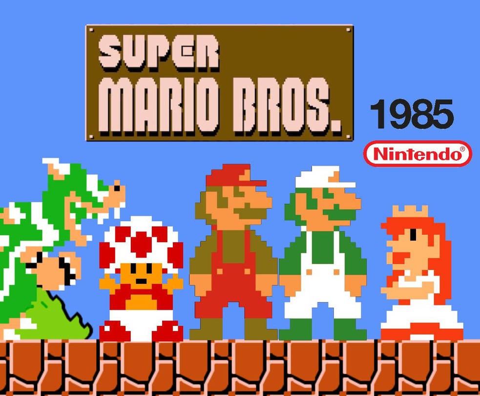
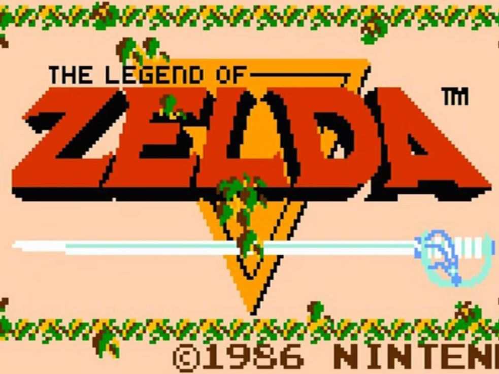
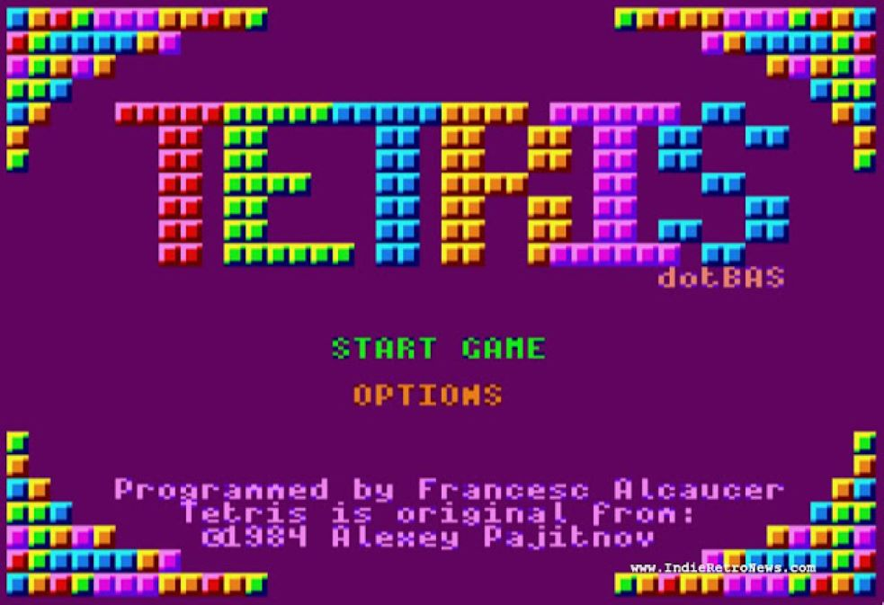
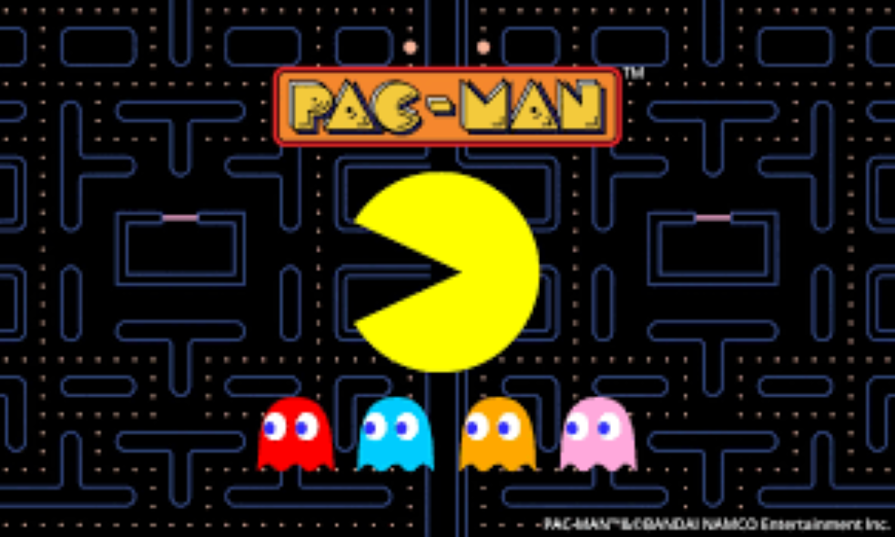
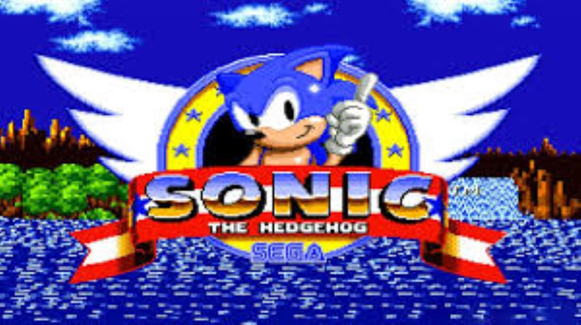
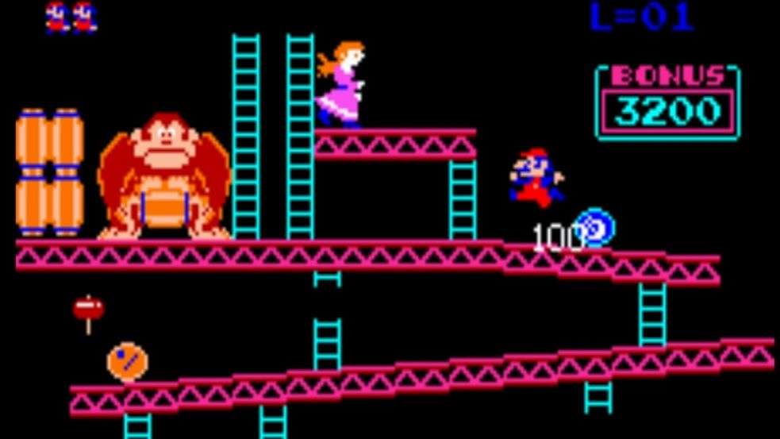
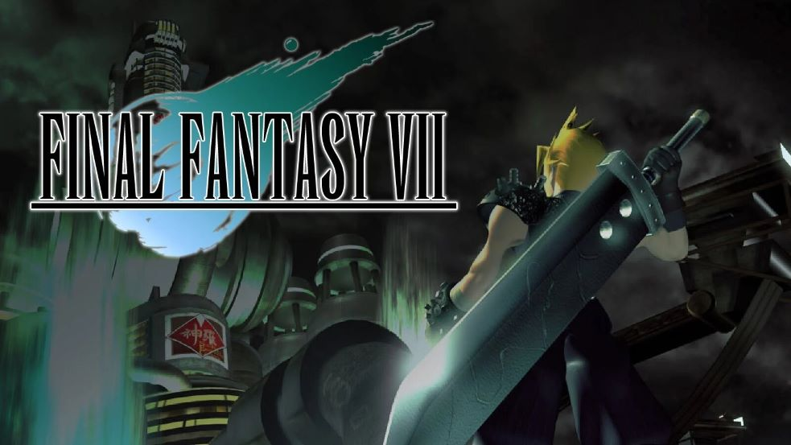
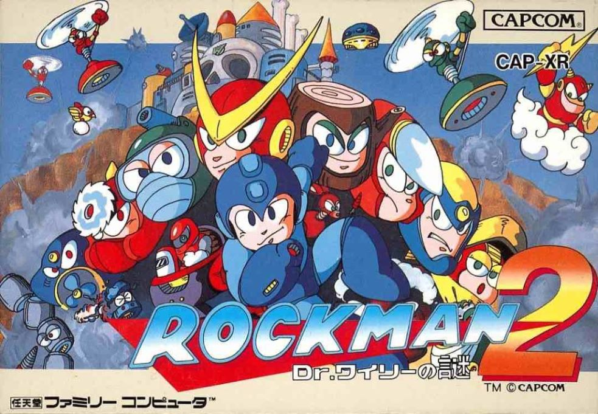
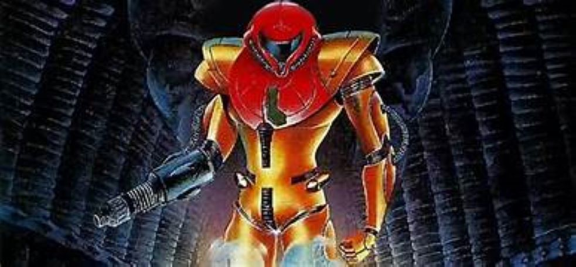

TOP 10 mejores videojuegos retro
- 1. Super Mario Bros. (1985) - NES.
- 2. The Legend of Zelda (1986) - NES.
- 3. Tetris (1984) - Varias plataformas.
- 4. Pac-Man (1980) - Arcade.
- 5. Street Fighter II (1991) - Arcade/SNES.
- 6. Sonic the Hedgehog (1991) - Sega Genesis.
- 7. Donkey Kong (1981) - Arcade.
- 8. Final Fantasy VII (1997) - PlayStation.
- 9. Mega Man 2 (1988) - NES.
- 10. Metroid (1986) - NES
Super Mario Bros. (1985)
Super Mario Bros. (1985) es un videojuego de plataformas desarrollado por Nintendo para la consola NES. En el juego, los jugadores controlan a Mario, un fontanero que debe rescatar a la Princesa Peach del malvado Bowser. Mario recorre varios mundos llenos de enemigos, obstáculos y niveles, utilizando poderes como hongos y flores de fuego para ganar habilidades especiales. Este juego revolucionó el género de plataformas y es considerado uno de los videojuegos más influyentes y exitosos de todos los tiempos.

The Legend of Zelda (1986)
The Legend of Zelda es un videojuego lanzado en 1986 por Nintendo, que se considera uno de los pioneros en el género de aventuras y acción. Creado por Shigeru Miyamoto y Takashi Tezuka, el juego sigue las aventuras de Link, un joven héroe que debe rescatar a la Princesa Zelda y derrotar al villano Ganon en el reino de Hyrule. Lo innovador de este título fue su mundo abierto, que permitía a los jugadores explorar, resolver acertijos y enfrentar enemigos a su propio ritmo. Su combinación de elementos de exploración, combate y rompecabezas sentó las bases para futuras entregas y estableció una de las franquicias más icónicas en la historia de los videojuegos.

Tetris (1984)
Tetris es un videojuego creado en 1984 por el programador ruso Alexey Pajitnov. Se trata de un juego de puzzle en el que los jugadores deben encajar piezas geométricas, llamadas "tetrominos", que caen desde la parte superior de la pantalla. El objetivo es completar líneas horizontales sin dejar huecos, lo que provoca que esas líneas desaparezcan y se acumulen puntos. Su mecánica simple pero adictiva, junto con su diseño minimalista, lo convirtió en un fenómeno global, popularizando los videojuegos de puzzle y sentando las bases para la industria de los juegos móviles. "Tetris" ha sido adaptado a numerosas plataformas y sigue siendo un clásico atemporal.

Pac-Man (1980)
Pac-Man es un icónico videojuego lanzado en 1980 por Namco, creado por Toru Iwatani. En este juego, los jugadores controlan a Pac-Man, un personaje amarillo que debe comer puntos y frutas en un laberinto mientras evita a los fantasmas que intentan atraparlo. La mecánica de juego es simple pero adictiva: comer todos los puntos de cada nivel para avanzar, utilizando potenciadores, como los puntos grandes, que permiten a Pac-Man comer a los fantasmas temporalmente. Su diseño atractivo y su enfoque en la estrategia y la evasión lo convirtieron en un fenómeno cultural, ayudando a popularizar los videojuegos en arcades y estableciendo a Pac-Man como un símbolo de la era dorada de los videojuegos.

Street Fighter II (1991)
Street Fighter II es un videojuego de lucha lanzado en 1991 por Capcom, considerado uno de los más influyentes en la historia de los videojuegos. Este título introdujo un sistema de combate competitivo en 2D, donde los jugadores eligen a uno de los varios personajes, cada uno con sus propias habilidades y estilos de lucha. La mecánica de juego permitió combos y movimientos especiales, lo que aportó profundidad estratégica y emoción a las peleas. Su éxito en arcades impulsó el auge de los juegos de lucha y sentó las bases para numerosas secuelas y adaptaciones. Street Fighter II se convirtió en un ícono cultural y un pilar en la comunidad de gamers, inspirando competiciones y la creación de un género completo.

Sonic the Hedgehog (1991)
Sonic the Hedgehog es un videojuego lanzado en 1991 por Sega, que presentó al famoso erizo azul como su personaje principal. Diseñado para competir con Mario, Sonic se caracteriza por su velocidad y su estilo de juego dinámico. En el juego, los jugadores controlan a Sonic mientras atraviesan diversos niveles llenos de plataformas, anillos y enemigos, con el objetivo de detener al malvado Dr. Robotnik, quien secuestra a los animales del mundo. La combinación de gráficos coloridos, música pegajosa y un gameplay rápido lo convirtió en un éxito instantáneo, ayudando a establecer a Sega como un competidor clave en la industria de los videojuegos. Sonic no solo marcó el comienzo de una exitosa franquicia, sino que también se convirtió en un ícono de la cultura pop.

Donkey Kong (1981)
Donkey Kong (1981) es un videojuego arcade creado por Nintendo y uno de los primeros ejemplos de un juego de plataformas. En el juego, el jugador controla a Jumpman (más tarde conocido como Mario), quien debe rescatar a una dama (Pauline) capturada por un gorila gigante llamado Donkey Kong. El objetivo es escalar una serie de plataformas mientras se evitan los barriles y obstáculos que Donkey Kong lanza. Este juego fue innovador por su estilo de juego y narrativa sencilla, además de ser el debut de dos personajes icónicos: Donkey Kong y Mario.

Final Fantasy VII (1997)
Final Fantasy VII (1997) es un juego de rol desarrollado por Square para PlayStation, famoso por ser el primero de la saga en usar gráficos 3D y escenas cinematográficas. La historia sigue a Cloud Strife, un mercenario que lucha contra la corporación Shinra, responsable de la destrucción ambiental del planeta. Con personajes icónicos, giros narrativos sorprendentes y un sistema de combate por turnos, el juego aborda temas como la identidad y la ecología. Su impacto fue tan grande que es considerado uno de los mejores videojuegos de todos los tiempos, con varias secuelas y remakes.

Mega Man 2 (1988)
Mega Man 2 (1988) es un juego de acción y plataformas desarrollado por Capcom para la consola NES. Es uno de los títulos más populares de la serie Mega Man, y ayudó a consolidar la franquicia. En el juego, los jugadores controlan a Mega Man, un robot creado por el Dr. Light, en su lucha contra el malvado Dr. Wily y sus ocho Robot Masters. Mega Man debe derrotar a estos enemigos para obtener sus habilidades y usarlas estratégicamente. Con niveles desafiantes, gráficos coloridos, y una banda sonora memorable, Mega Man 2 es considerado un clásico y uno de los mejores juegos de la era de 8 bits.

Metroid (1986)
Metroid (1986) es un videojuego de acción y aventura desarrollado por Nintendo para la consola NES. La historia sigue a Samus Aran, una cazarrecompensas que debe explorar el planeta Zebes para eliminar a la amenaza de los piratas espaciales y su poderoso organismo conocido como Metroid. El juego es pionero en el diseño de mundo abierto, permitiendo a los jugadores explorar libremente y descubrir mejoras que les ayudan a avanzar. Con su atmósfera envolvente, gráficos innovadores y una narrativa que se desvela a través de la exploración, Metroid sentó las bases para una de las franquicias más icónicas de Nintendo y es considerado un clásico atemporal.
